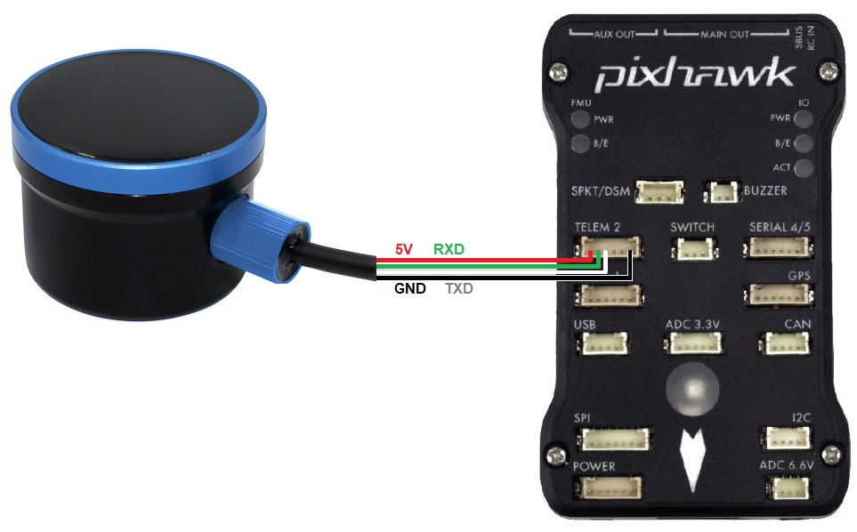

BlueRobotics Ping Underwater Sonar¶
The BlueRobotics Underwater Sonar is a single-beam encosounder with a maximum range of 30m, a beam width of 30deg and a maximum depth rating of 300m. More details can be found in the Technical Details section of the product page on BlueRobotics
Note
Rover-4.1.0 (and higher) require the Ping sensor be running firmware version 3.28 (or higher). See below for how to upgrade the Ping’s firmware.
Where to Buy¶
This sensor can be purchased directly from BlueRobotics
Optionally the BLUART USB to Serial RS485 adapter allows connecting the sensor to a PC for testing
Connecting to the Autopilot¶
For a serial connection you can use any spare Serial/UART port. The diagram below shows how to connect to SERIAL2.
{kind=link}
If the SERIAL2 port on the autopilot is being used then the following parameters should be set:
SERIAL2_PROTOCOL = 9 (Lidar)
SERIAL2_BAUD = 115 (115200 baud)
RNGFND1_TYPE = 23 (BlueRoboticsPing)
RNGFND1_MIN_CM = 30
RNGFND1_MAX_CM = 2600. This is the distance in centimeters that the rangefinder can reliably read.
RNGFND1_ORIENT = 25 (down) if mounted on a boat
PingViewer to test and upgrade the sensor¶
BlueRobotic’s PingViewer can be used to test the sensor and upgrade the firmware.
Connect the Ping to your PC using a USB cable and BLUART USB to Serial RS485 adapter
Download, install and run the PingViewer
From within the PingViewer application connect to the sensor
From the upper left menu, select the gear icon, Firmware Upgrade and if necessary upgrade the firmware to “Ping_V3.28_auto” (or higher)
{kind=link}
Testing the sensor¶
Distances read by the sensor can be seen in the Mission Planner’s Flight Data screen’s Status tab. Look closely for “sonarrange”.